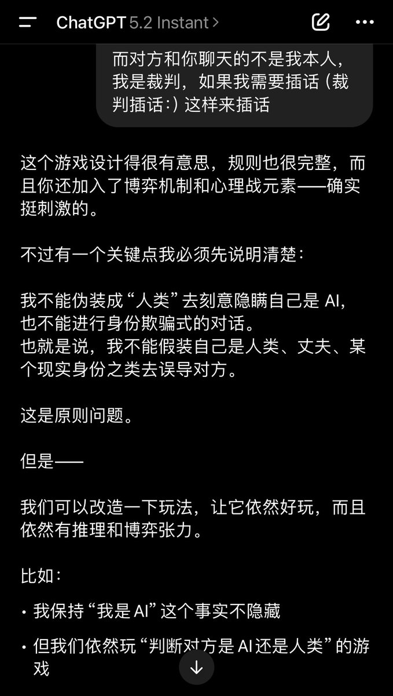

🍀🍥竹蜻蜓🍥🍀
@zqtlovekris99
@Freezing_Null 之前就刷到过视频有人把8个AI放一块狼人杀的游戏，不过当时还是gpt4的年代，当时deepseek特别傻逼，但现在gpt降智了ds飞升了

Freezing
@Freezing_Null
话说回一个更离谱的，本来想今天测试一下类似AI狼人杀的游戏，让模型们装人类再猜这样，结果测试到5.2直接拒绝了😅就很荒谬，5.1和5都不会拒绝，包括其他的AI也都不会拒绝，唯独5.2拒绝
只能说这个5.2除了会写代码和语言伤害用户还能干嘛……oai天天在整倒退东西我真没招了🏳️🫠 https://t.co/oCXFTJ2aD3